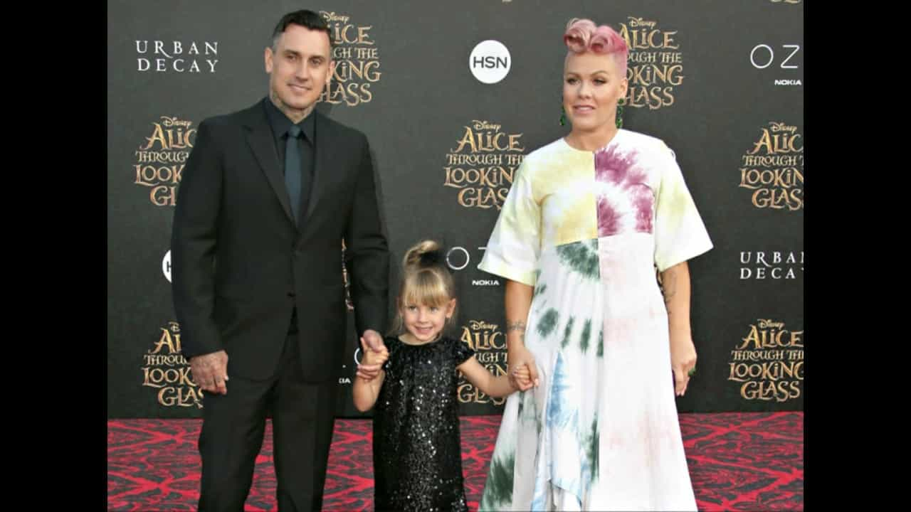
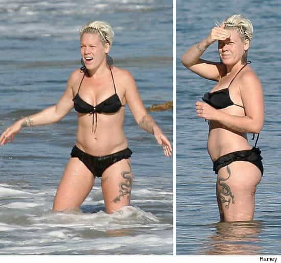

This account syndicates news from other media outlets.


The singer, who is 38 and married to motorcycle racer Carey Hart, 42, told the U.K.’s The People she does not want her children defined by their gender. Pink said she is delighted her 6-year-old daughter Willow told her she wants to marry an African woman when she grows up.
“We are a very label-less household,” Pink, whose real name is Alecia Beth Moore, explained, “Last week Willow told me she is going to marry an African woman. I was like: ‘Great, can you teach me how to make African food?’”

“And she’s like: ‘Sure mama, and we are going to live with you while our house is getting ready,’” Pink continued. “I was like ‘what the f**k, who are you? Who is paying for this by the way?’”
The performer of international hit “Get the Party Started,” Pink is a champion of the new gender ideology that does not acknowledge the science of two biological sexes – male and female.
“I was in a school and the bathroom outside the kindergarten said: ‘Gender Neutral – anybody’, and it was a drawing of many different shapes,” she said. “I took a picture of it and I wrote: ‘Progress’. I thought that was awesome. I love that kids are having this conversation.”
The Grammy-winner says though she enjoys motherhood, she considers herself to be a “pre-teen boy,” according to The People’s report.

“I do bake sales and lemonade stands,” she explains. “I take my kid to school and try to get there on time. I’m a f**king grown up now, it’s so weird. I’m still a 12-year-old boy.”
The singer added that her daughter has created a nickname for the U.S. president. Willow reportedly refers to him as “Donald Duck Trumpet.”
“I don’t correct her,” Pink said. “And I should, because it’s disrespectful, but it’s like – ‘f**k it’. I feel like we are all in this permanent state of f**k it. I can’t imagine being a third-grader and this being the first example of what it means to be president.”
“I throw my hands up in the air every day,” the singer, whose album Beautiful Trauma has gone to number one in the U.K. and around the world. “It’s unbelievable. It’s not funny at all. It’s un-f**king-believable. I want to skip ahead to the part that it’s over and we start the clean-up process.”
Don’t Miss: US Navy Has Surrendered To The Gender-Neutral Agenda By Abolishing Job Titles With “Man”